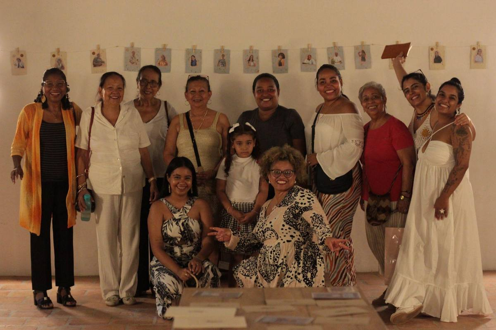
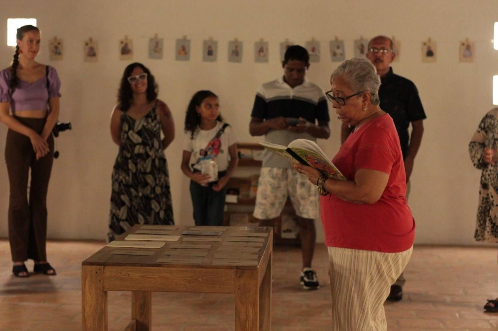
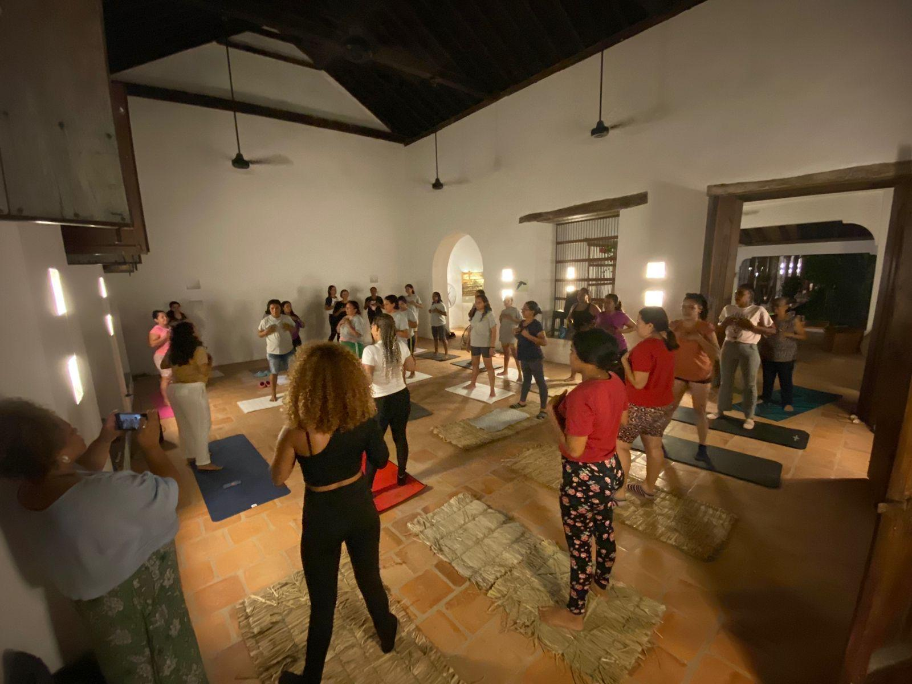
Residencia artística · Mompox · Feb–Mar 2024
La plaza, la casa y el río
Mujeres momposinas: sus voces, relatos y genealogías narrativas. Laboratorios de memorias, experimentación plástica y creación de un oráculo de historias con mujeres narradoras del territorio.


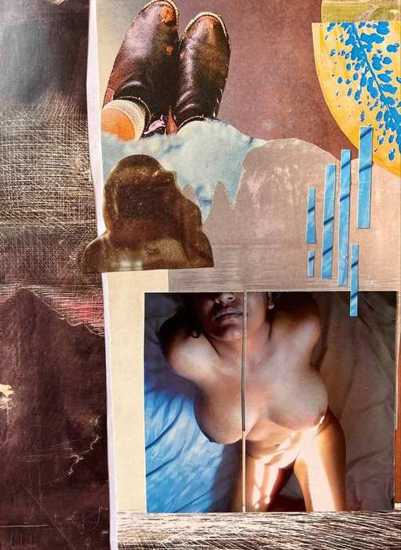

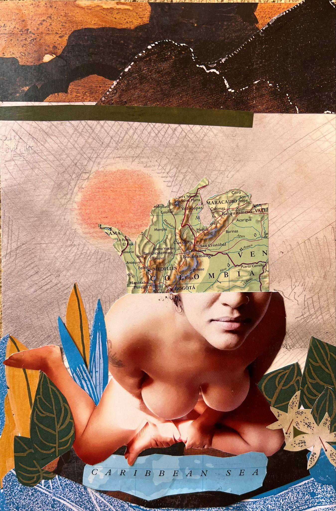
Exposición · Xenson Art Space · Kampala, Uganda · 2023
Papel Blanco
Primera exposición pública de poemas y collages. Look One – Edición 3. Integración de crear y gestionar la publicación de arte. La serie surgió como un ejercicio de introspección a través del collage y la escritura.


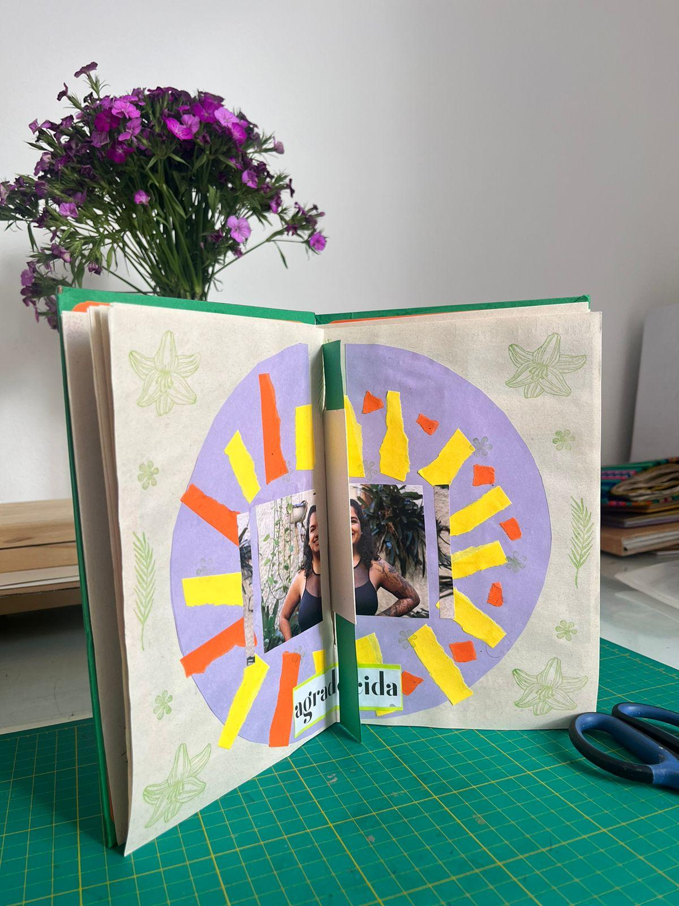
Taller · Medellín · Nov 2024
Lo que no contaron mis abuelas
Diseño de metodología y creación de libretas para el cancionero íntimo con la cantautora Alicia y la Marea. Círculos de palabra, escritura y creación con mujeres afro.


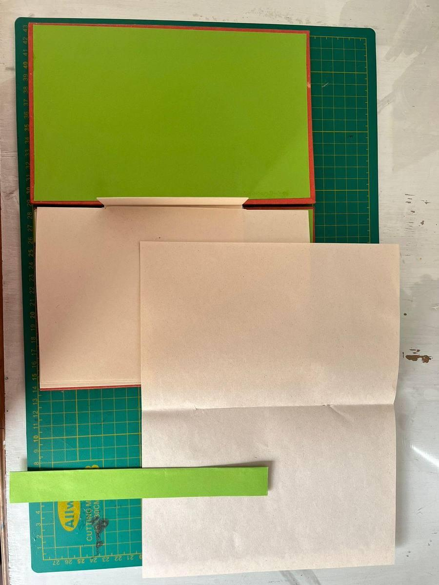
Taller La Estampa · Medellín · Sep–Dic 2024
Libro de artista
Conceptos básicos sobre el libro de artista, técnicas de plegado, encuadernación e intervención de imágenes. Abanico, fanzine desplegable, cuaderno australiano.


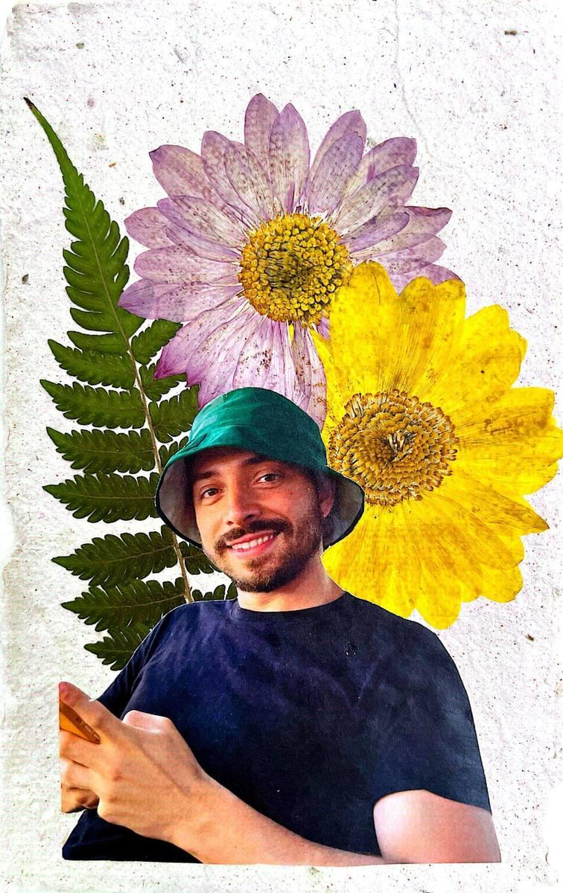
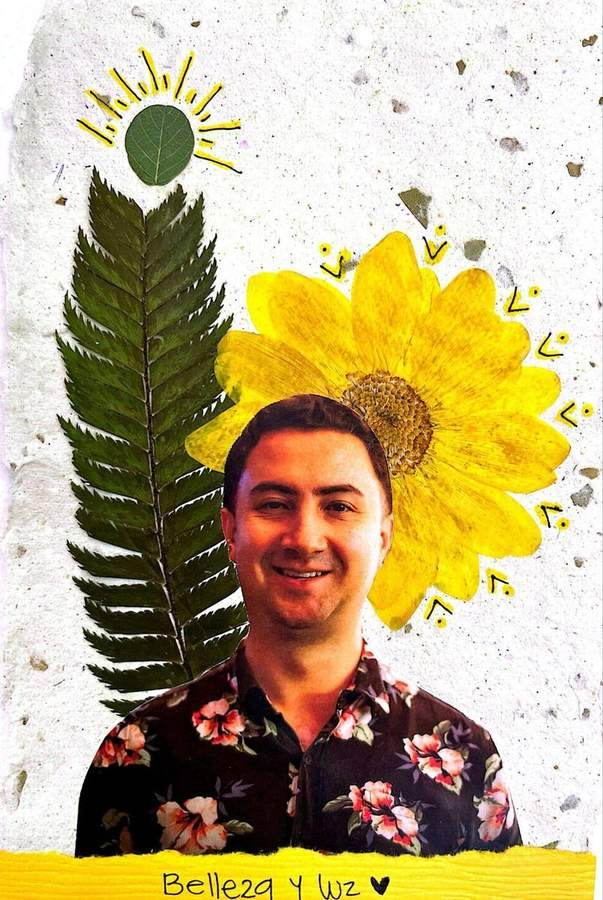
Serie de 20 collages · Sep–Dic 2024
De la habitación propia al jardín
Papel reciclado y fibras vegetales. La vuelta al territorio después de un exilio voluntario. Elaborar papel con mis manos y embellecerlo con materia orgánica fue un ejercicio de autoexploración y reconexión.

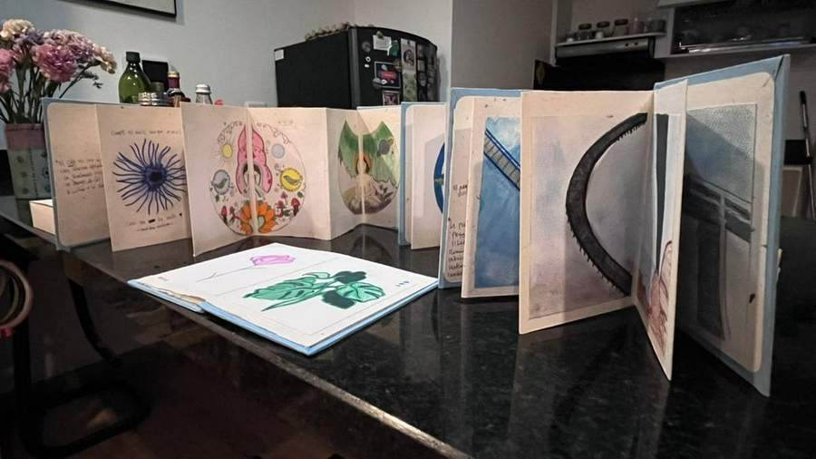
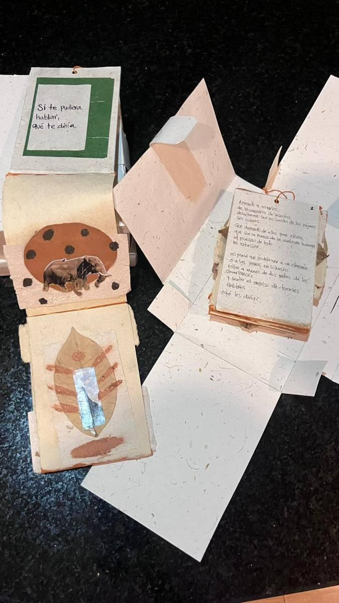
Taller Tundra · Bogotá · Ene–Abr 2026
Encuadernación artesanal
Plegado de papel, encuadernación e intervención de imágenes. Caballete, japonesa, costura francesa y acordeón.

Práctica continua · +3 años
Creación de collages
La práctica del collage en papel como fuente creativa de conocimiento. Exploración de la intuición y el subconsciente, expresión libre de ideas e historias.